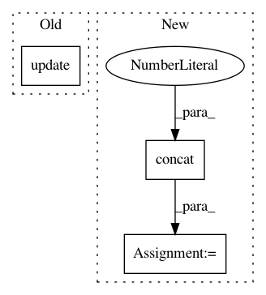

dea3e9441a747cabe77297c2a275ffa94b983024,GPflow/param.py,Parameterized,get_samples_dict,#Parameterized#Any#,526
Before Change
d = {}
for p in self.sorted_params:
d.update(p.get_samples_dict(samples))
return d
def __getattribute__(self, key):
After Change
d = pd.DataFrame()
for p in self.sorted_params:
d = pd.concat([d, p.get_samples_dict(samples)], axis=1)
return d
def __getattribute__(self, key):
In pattern: SUPERPATTERN
Frequency: 3
Non-data size: 3
Instances
Project Name: GPflow/GPflow
Commit Name: dea3e9441a747cabe77297c2a275ffa94b983024
Time: 2016-07-06
Author: mv310@cam.ac.uk
File Name: GPflow/param.py
Class Name: Parameterized
Method Name: get_samples_dict
Project Name: neuropsychology/NeuroKit.py
Commit Name: ab6ead1d1da55c11c9161a0b05082fed557402e7
Time: 2017-03-30
Author: dom.mak19@gmail.com
File Name: neurokit/bio/bio_meta.py
Class Name:
Method Name: process_bio
Project Name: analysiscenter/batchflow
Commit Name: d37727ed2e1f8474e2c1ceb1da5719c1b81f4ab8
Time: 2019-03-04
Author: Tsimfer.SA@gazprom-neft.ru
File Name: batchflow/models/tf/deep_galerkin.py
Class Name: DeepGalerkin
Method Name: _make_inputs